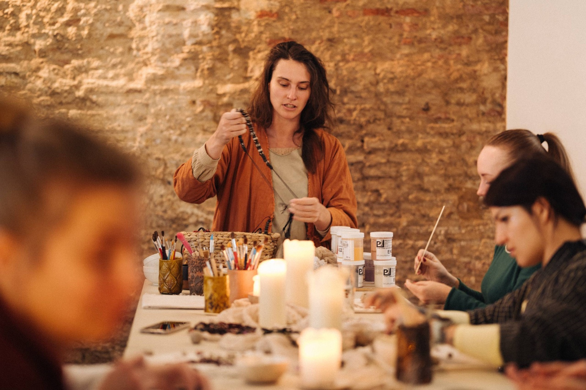

всего мест — камерно и без очереди к рабочему столу

5 мест · старая Валенсия
СВОЁ МЕСТО ДЛЯ ГЛИНЫ
Коворкинг для тех, кто уже умеет работать с глиной и хочет спокойно создавать в оборудованной студии.
ежедневный доступ в свободное от занятий время
C/ de les Cuines, 8 · в сердце старой Валенсии
Всё под рукой
ПРИХОДИТЕ И РАБОТАЙТЕ
Не нужно собирать мастерскую дома. Здесь есть пространство, материалы и люди рядом.
Рабочее место
Свой стол, общие инструменты и доступ к оборудованию студии.
Материалы
Один блок белой глины и прозрачная глазурь включены. Дополнительная глина — 1 €/кг.
Обжиг
Печь находится в студии. Обжиг считается отдельно — 6 € за полку.
Кому подходит
УЖЕ ЗНАЕТЕ ГЛИНУ?
Для керамистов, художников и дизайнеров, которым нужна рабочая база без собственной печи.
Самостоятельным керамистам
Вы владеете базовыми техниками и не нуждаетесь в постоянном сопровождении.
Художникам и дизайнерам
Можно реализовать объект, коллекцию или прототип в оборудованном пространстве.
Преподавателям
Можно проводить свои занятия: материалы возвращаются, остальная выручка делится 50/50.

Никогда не работали с глиной?
Записаться на интро ↗НАЧНИТЕ С ИНТРО-КУРСА
Четыре занятия с керамистом в маленькой группе. После курса вы сможете уверенно работать в студии самостоятельно.
120 €
Материалы и обжиги включены.